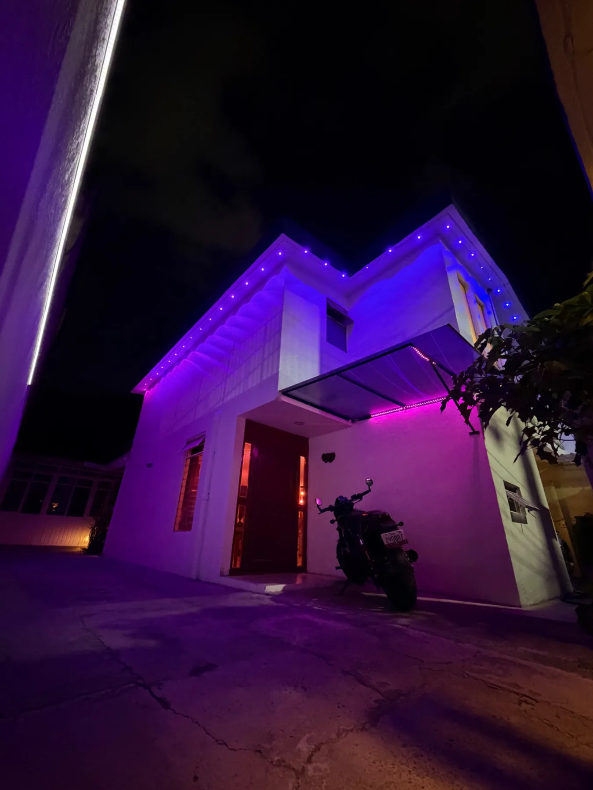

60 LED/m como base
30 LED/m cuando conviene y hasta 144 LED/m para aplicaciones de mayor densidad.

La diferencia no es sólo la tira: es cómo dimensionamos, explicamos, armamos e integramos la solución completa.
30 LED/m cuando conviene y hasta 144 LED/m para aplicaciones de mayor densidad.
5050 y otras tecnologías según aplicación, con FCOB/COB definidos por separado.
El enfoque de 2 oz de cobre favorece disipación y ayuda a reducir calentamiento y caída de tensión.
Cuando la especificación del producto lo respalda: 50,000+ h, ≈17 años a 8 h/día en condiciones saludables.
Kits pensados para mínima intervención técnica y sin equipo adicional cuando el proyecto lo permite.
Selección, dimensionamiento, configuración WLED y acompañamiento antes y después de comprar.
Tira, controlador, fuente, perfil, cable o kit completo: sólo lo que realmente necesitas.
Hogar, comercio, fitness, estudio, oficinas, fachadas y domótica.
Antes de comprar, define dos cosas: si quieres un solo color a la vez o efectos en movimiento, y qué longitud tendrá tu instalación.
Toda la tira enciende del mismo color y con la misma intensidad. No hacen efectos de movimiento, pero son ideales para una luz blanca elegante y uniforme.
Cada LED o pequeño grupo se controla de forma independiente. Permiten degradados, arcoíris, persecuciones, reacciones a música y varias zonas de color.
| Modelo | Voltaje | Control | Espacio ideal | Lo mejor |
|---|---|---|---|---|
| WS2812B | 5V | LED por LED | Proyectos cortos · 3–5 m | Económica y versátil |
| SK6812 RGBW | 5V | LED por LED | Habitaciones y escritorios | Blanco dedicado + color |
| WS2815 | 12V | LED por LED | 5–10 m | Línea de respaldo si un LED falla |
| WS2814 RGBW | 24V | Por zonas · cada 6 LED / ~10 cm | Techos y perímetros largos · 10 m+ | 24V + blanco + digital |
| COB / FCOB Digital | 12V / 24V | Por zonas continuas | Superficies visibles / reflejantes | Línea continua tipo neón, incluso con poco difusor |
Para cocina, baño o clóset: análoga RGBW o RGB+CCT (24V).
Para escritorio, TV o mueble: SK6812 si quieres blanco real; WS2812B si priorizas color.
Para techo o sala: WS2814 24V o WS2815 12V según el nivel de control que quieras.
Para muros, pisos o espejos: COB/FCOB digital, especialmente cuando quieres una línea continua.
Una foto comparativa real puede explicar en segundos la diferencia entre puntos visibles y una línea continua.
Configuraciones orientadas a distintos usos, con componentes compatibles y precio de volumen.
Dinos qué quieres iluminar y genera una primera propuesta de tira, potencia y fuente.
Inspirado en el enfoque técnico de WLED System Architect: números claros, recomendaciones y márgenes explícitos.
Consumo, fuente y protección para la instalación.
Cuánto cuesta encender la iluminación por día, mes y año.
Orientación para cableado, recorrido e inyección.
Voltaje, densidad, chipset y uso recomendado.
Una muestra de fachadas, proyectos a medida y demostraciones de iluminación dinámica. Cada proyecto puede convertirse en una solución diseñada alrededor de tu espacio.
Iluminación arquitectónica pensada para cambiar de ambiente durante la noche sin sacrificar el carácter de la fachada.
Ver video completo ↗Una solución personalizada para mobiliario urbano, diseñada alrededor de la geometría, visibilidad y experiencia del espacio.
Ver proyecto ↗Efectos dinámicos sincronizados con audio para setups, espacios de entretenimiento y experiencias inmersivas.
Ver demostración ↗
Residencial, comercial, fitness, estudio, fachada, domótica o una solución completamente a medida.
Contenido para elegir mejor, instalar correctamente y aprovechar WLED, domótica e IoT.
Qué cambia cuando agregas un canal blanco dedicado.
Cómo elegir voltaje según corriente, recorrido y aplicación.
Controlador, alimentación, configuración inicial y seguridad.
Checklist de alimentación, datos, tierra común e inyección.
Escríbenos por WhatsApp y te ayudamos a dimensionar tu proyecto antes de comprar.